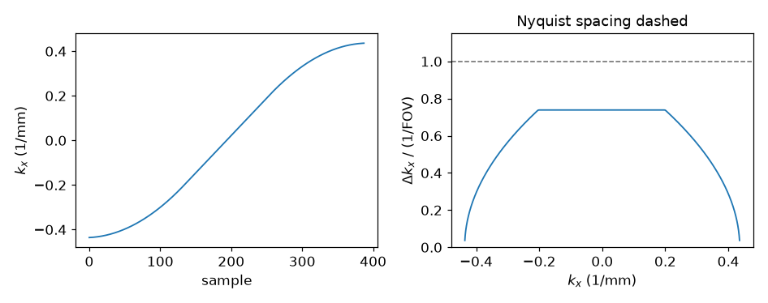
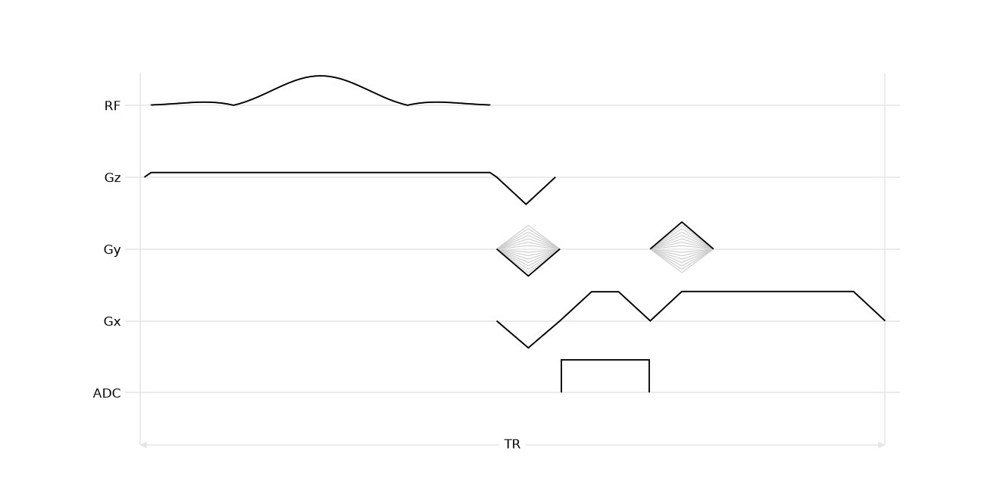

Note
Go to the end to download the full example code.
A ramp-sampled readout module#
The shipped Cartesian readouts acquire on the flat top of the readout lobe, so the ramps carry area that is never sampled. Sampling through the ramps as well covers the same extent of k-space in a shorter lobe, with nonuniform ADC sampling locations that require regridding.
The implementation follows the
SequenceModule contract and compares its duration
and ADC sampling locations with a flat-top readout.
Module interface#
init_module assigns self.seq, adds the blocks of the layout to it and
sets center, which for a readout
is the interval from the start of the module to the echo. Events bound to
local variables are published under those names, so a scan loop reaches the
phase encode as readout.gy_pre without the module returning anything.
The prephaser carries half the area of the whole lobe, ramps included, so the echo lands at the middle of the lobe rather than the middle of its flat top. The acquisition window is centred on the lobe and sampled at a fixed rate: equal steps in time over a gradient that is not constant are unequal steps in k.
import math
import numpy as np
import pypulseqpp as pp
import pypulseqpp.sequences as design
class RampSampledLineReadout(design.SequenceModule):
"""Cartesian line readout acquired across the whole readout lobe.
Parameters
----------
system : pypulseqpp.Opts
System limits.
rf : RfEvent
The pulse that opens the repetition.
gz : GradEvent, optional
Its selection gradient, played in the same block.
gz_reph : GradEvent, optional
Its rephaser, played in the prewinder block.
fov : float
Isotropic in-plane field of view (m).
matrix : int
Isotropic in-plane matrix size.
readout_bandwidth_hz : float, optional
Requested ADC sampling rate (Hz). ``bandwidth_hz`` reports the rate
the ADC raster admits.
spoiling_cycles : float, optional
Dephasing left on the read axis at the end of the repetition, in
cycles across one voxel.
Attributes
----------
gx_pre : TrapEvent
Readout prephaser, half the area of the lobe.
gy_pre : TrapEvent
Phase encode at its largest step, for the loop to scale.
gx : TrapEvent
Readout lobe, sampled from ramp to ramp.
adc : AdcEvent
The acquisition window, centred on the lobe.
gx_spoil : TrapEvent
Rewinds the second half of the line and adds the spoiling.
gy_rew : TrapEvent
The negated phase encode, scaled by the loop alongside ``gy_pre``.
echo_time : float
From the RF isodelay to the echo (s).
center_sample : int
Index of the sample at the echo.
bandwidth_hz : float
Achieved ADC sampling rate (Hz).
"""
def init_module(
self,
system: pp.Opts,
rf,
gz=None,
gz_reph=None,
*,
fov: float,
matrix: int,
readout_bandwidth_hz: float = 500e3,
spoiling_cycles: float = 4.0,
) -> None:
gx = pp.make_trapezoid("x", area=matrix / fov, system=system)
span = pp.calc_duration(gx)
dwell = (
math.floor(1.0 / readout_bandwidth_hz / system.adc_raster_time)
* system.adc_raster_time
)
# The window is centred on the lobe and clears the ADC dead time at
# both ends, so the echo falls between two samples of it.
divisor = int(system.adc_samples_divisor)
usable = span - 2 * system.adc_dead_time
n_samples = int(usable / dwell + 1e-9) // divisor * divisor
adc = pp.make_adc(
num_samples=n_samples,
dwell=dwell,
delay=pp.round_to_raster(
0.5 * (span - n_samples * dwell), system.adc_raster_time
),
system=system,
)
gx_pre = pp.make_trapezoid("x", area=-0.5 * gx.area, system=system)
gy_pre = pp.make_trapezoid("y", area=0.5 * matrix / fov, system=system)
gy_rew = pp.scale_grad(gy_pre, -1.0)
gx_spoil = pp.make_trapezoid(
"x", area=-0.5 * gx.area + spoiling_cycles * matrix / fov, system=system
)
self.seq = pp.Sequence(system)
self.seq.add_block(*filter(None, (rf, gz)))
self.seq.add_block(*filter(None, (gx_pre, gy_pre, gz_reph)))
self.seq.add_block(gx, adc)
self.seq.add_block(gx_spoil, gy_rew)
rf_center = float(rf.delay) + float(rf.center)
self.echo_time = (
pp.calc_duration(*filter(None, (rf, gz)))
- rf_center
+ pp.calc_duration(*filter(None, (gx_pre, gy_pre, gz_reph)))
+ 0.5 * span
)
self.center = rf_center + self.echo_time
self.center_sample = round((0.5 * span - adc.delay) / dwell)
self.bandwidth_hz = 1.0 / dwell
Readout duration#
Both designs sample the same extent of k-space, so both resolve the same matrix over the same field of view. The flat-top design carries that extent on its plateau alone, and its ramps add duration without adding samples.
system = pp.Opts(
max_grad=40.0,
grad_unit="mT/m",
max_slew=150.0,
slew_unit="T/m/s",
rf_dead_time=100e-6,
rf_ringdown_time=30e-6,
adc_dead_time=10e-6,
)
FOV = 220e-3
MATRIX = 192
ramp_sampled = pp.make_trapezoid("x", area=MATRIX / FOV, system=system)
flat_topped = pp.make_trapezoid(
"x",
amplitude=ramp_sampled.amplitude,
flat_time=pp.round_to_raster(
MATRIX / FOV / ramp_sampled.amplitude, system.grad_raster_time
),
system=system,
)
for name, lobe in (("ramp-sampled", ramp_sampled), ("flat top only", flat_topped)):
print(
f"{name:14} lobe {pp.calc_duration(lobe) * 1e6:6.0f} us, "
f"flat {lobe.flat_time * 1e6:6.0f} us, amplitude "
f"{lobe.amplitude / system.gamma * 1e3:5.1f} mT/m"
)
ramp-sampled lobe 800 us, flat 240 us, amplitude 39.4 mT/m
flat top only lobe 1080 us, flat 520 us, amplitude 39.4 mT/m
One repetition#
excitation = design.SpatialSelectiveExcitation(
system, flip_angle_deg=12.0, thickness_m=5e-3, duration_s=3e-3
)
readout = RampSampledLineReadout(
system,
excitation.rf,
excitation.gz,
excitation.gz_reph,
fov=FOV,
matrix=MATRIX,
)
print("events:", ", ".join(sorted(vars(readout.events))))
print(
f"{int(readout.adc.num_samples)} samples at {readout.bandwidth_hz * 1e-3:.0f} kHz, "
f"echo at sample {readout.center_sample}"
)
print(
f"TE {readout.echo_time * 1e3:.3f} ms over a {readout.duration * 1e3:.3f} ms "
"repetition"
)
/home/runner/work/pypulseqpp/pypulseqpp/docs/build/site/pypulseqpp/_events.py:234: UserWarning: Specified RF delay 0.00 us is less than the dead time 100 us. Delay was increased to the dead time.
made = factory(*args, **kwargs)
events: adc, gx, gx_pre, gx_spoil, gy_pre, gy_rew, gz, gz_reph, rf
388 samples at 500 kHz, echo at sample 194
TE 2.520 ms over a 6.600 ms repetition
Sample spacing along the line#
calculate_kspace is one of the analyses a module forwards to the sequence
it built, so the sample positions come from the events themselves rather than
from the design arithmetic. The spacing is finest on the ramps, where the
gradient is weakest, and largest on the plateau, where it remains below the
Nyquist spacing for the prescribed field of view. The
first and last samples, taken while the gradient is still near zero, are
almost coincident in k: the edge samples are redundant. The nonuniform sampling locations require
regridding during reconstruction.

k spacing from 0.17 to 3.36 1/m, Nyquist 4.55 1/m
<Figure size 946x374 with 2 Axes>
Scan loop#
The loop scales the published phase encode per line and labels the acquisition; the rest of the layout is played as the module laid it out.
seq = pp.Sequence(system=system)
for line in range(MATRIX):
ky = (line - MATRIX // 2) / (MATRIX / 2)
seq.add_block(excitation.rf, excitation.gz, pp.make_label("LIN", "SET", line))
seq.add_block(readout.gx_pre, pp.scale_grad(readout.gy_pre, ky), excitation.gz_reph)
seq.add_block(readout.gx, readout.adc)
seq.add_block(readout.gx_spoil, pp.scale_grad(readout.gy_rew, ky))
print(
f"{seq.num_blocks} blocks, {seq.duration()[0]:.2f} s, timing {seq.check_timing()[0]}"
)
768 blocks, 1.27 s, timing True
One repetition of the module.
seq.paper_plot(tr=1)

namespace(diagram=<mrsd.diagram.Diagram object at 0x7f825d8d99d0>, tr=1, underlays=[13, 25, 37, 49, 61, 73, 85, 97, 109, 121, 133, 145, 157, 169, 181])
Total running time of the script: (0 minutes 0.257 seconds)